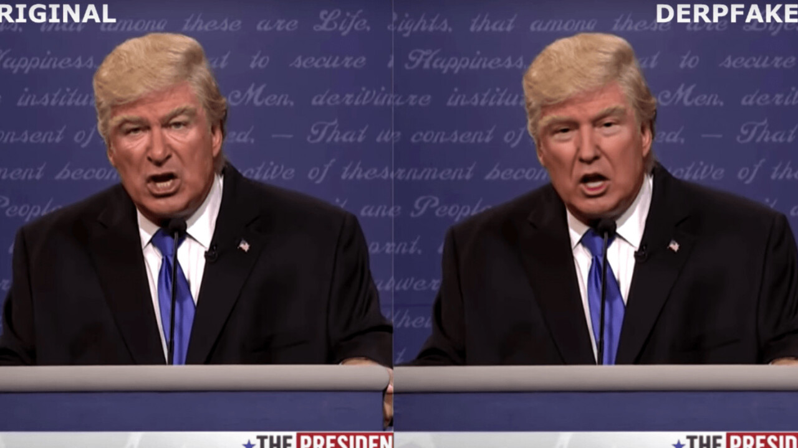

<div class="landing-page u-bg--white">
  <div class="landing-page__content1">
    <div>
      
    </div>

    <div class="landing-page__content1--text">
      <div class="landing-page__content1--text-header">
        Donald Trump <span class="u-bold"> Deep Fake </span>?
      </div>
      <div class="landing-page__content1--text-val">
        A deepfake of Donald Trump was easily created based on a skit Jimmy
        Fallon performed on NBC's The Tonight Show. In this skit (aired 4 May
        2016), Jimmy Fallon dressed up as Donald Trump and pretended to
        participate in a phone call with Barack Obama, conversing in a manner
        that presented him to be bragging about his primary win in Indiana. On 5
        May 2019 a deepfake of Donald Trump was created. In this deepfake, Jimmy
        Fallon's face was transformed into Donald Trump's face (audio remained
        the same). This deepfake video was uploaded to YouTube by the founder of
        Deepfakes with a comedic intent.
      </div>
    </div>
  </div>
</div>
